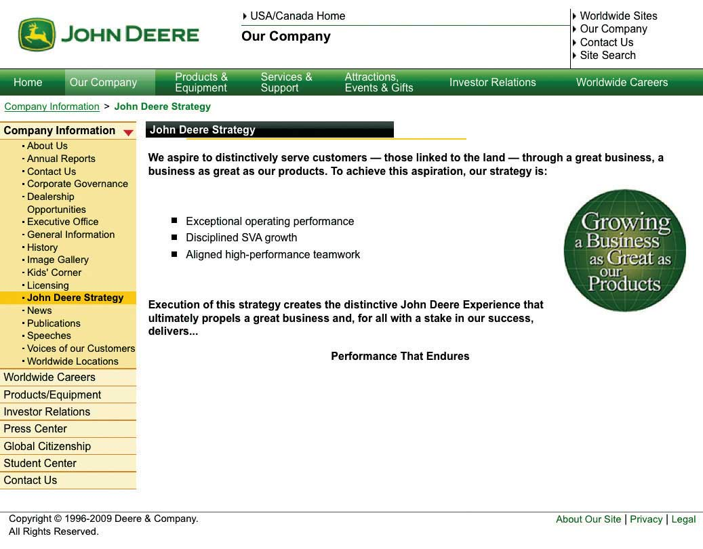
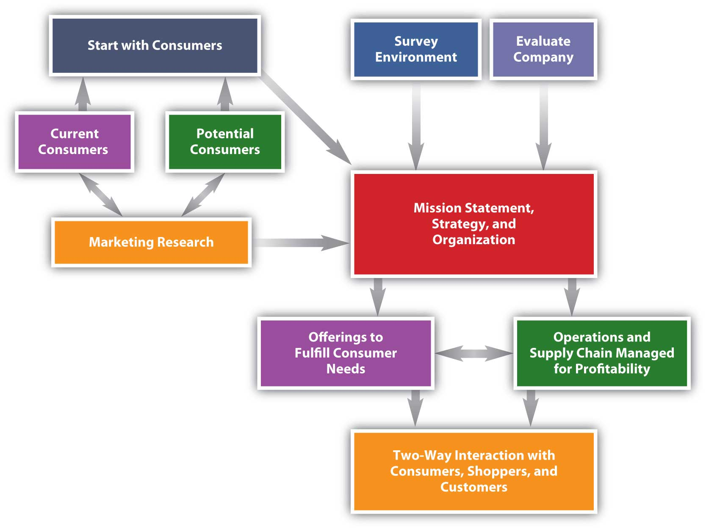

What makes a business idea work? Does it only take money? Why are some products a huge success and similar products a dismal failure? How was Apple, a computer company, able to create and launch the wildly successful iPod, yet Microsoft’s first foray into MP3 players was a total disaster? If the size of the company and the money behind a product’s launch were the difference, Microsoft would have won. But for Microsoft to have won, it would have needed something it’s not had in a while—good marketing so it can produce and sell products that consumers want.
So how does good marketing get done?
Marketing“The activity, set of institutions, and processes for creating, communicating, delivering, and exchanging offerings that have value for customers, clients, partners, and society at large.” is defined by the American Marketing Association as “the activity, set of institutions, and processes for creating, communicating, delivering, and exchanging offerings that have value for customers, clients, partners, and society at large.”American Marketing Association, “Definition of Marketing,” http://www.marketingpower.com/AboutAMA/Pages/DefinitionofMarketing.aspx?sq=definition+of+marketing (accessed December 3, 2009). If you read the definition closely, you see that there are four activities, or components, of marketing:
The traditional way of viewing the components of marketing is via the four Ps:
Introduced in the early 1950s, the four Ps were called the marketing mix, meaning that a marketing plan is a mix of these four components.
If the four Ps are the same as creating, communicating, delivering, and exchanging, you might be wondering why there was a change. The answer is that they are not exactly the same. Product, price, place, and promotion are nouns. As such, these words fail to capture all the activities of marketing. For example, exchanging requires mechanisms for a transaction, which consist of more than simply a price or place. Exchanging requires, among other things, the transfer of ownership. For example, when you buy a car, you sign documents that transfer the car’s title from the seller to you. That’s part of the exchange process.
Even the term product, which seems pretty obvious, is limited. Does the product include services that come with your new car purchase (such as free maintenance for a certain period of time on some models)? Or does the product mean only the car itself?
Finally, none of the four Ps describes particularly well what marketing people do. However, one of the goals of this book is to focus on exactly what it is that marketing professionals do.
Value is at the center of everything marketing does (Figure 1.1). What does value mean?
Figure 1.1

Marketing is composed of four activities centered on customer value: creating, communicating, delivering, and exchanging value.
When we use the term valueTotal sum of benefits received that meet a buyer’s needs. See personal value equation., we mean the benefits buyers receive that meet their needs. In other words, value is what the customer gets by purchasing and consuming a company’s offering. So, although the offering is created by the company, the value is determined by the customer.
Furthermore, our goal as marketers is to create a profitable exchange for consumers. By profitable, we mean that the consumer’s personal value equation is positive. The personal value equationThe net benefit a consumer receives from a product less the price paid for it and the hassle or effort expended to acquire it. is
value = benefits received – [price + hassle]Hassle is the time and effort the consumer puts into the shopping process. The equation is a personal one because how each consumer judges the benefits of a product will vary, as will the time and effort he or she puts into shopping. Value, then, varies for each consumer.
One way to think of value is to think of a meal in a restaurant. If you and three friends go to a restaurant and order the same dish, each of you will like it more or less depending on your own personal tastes. Yet the dish was exactly the same, priced the same, and served exactly the same way. Because your tastes varied, the benefits you received varied. Therefore the value varied for each of you. That’s why we call it a personal value equation.
Value varies from customer to customer based on each customer’s needs. The marketing conceptA philosophy underlying all that marketers do, driven by satisfying customer wants and needs., a philosophy underlying all that marketers do, requires that marketers seek to satisfy customer wants and needs. Firms operating with that philosophy are said to be market orientedThe degree to which a company follows the marketing concept.. At the same time, market-oriented firms recognize that exchange must be profitable for the company to be successful. A marketing orientation is not an excuse to fail to make profit.
Firms don’t always embrace the marketing concept and a market orientation. Beginning with the Industrial Revolution in the late 1800s, companies were production orientationA belief that the way to compete is a function of product innovation and reducing production costs, as good products appropriately priced sell themselves.. They believed that the best way to compete was by reducing production costs. In other words, companies thought that good products would sell themselves. Perhaps the best example of such a product was Henry Ford’s Model A automobile, the first product of his production line innovation. Ford’s production line made the automobile cheap and affordable for just about everyone. The production eraA period beginning with the Industrial Revolution and concluding in the 1920s in which production-orientation thinking dominated the way in which firms competed. lasted until the 1920s, when production-capacity growth began to outpace demand growth and new strategies were called for. There are, however, companies that still focus on production as the way to compete.
From the 1920s until after World War II, companies tended to be selling orientationA philosophy that products must be pushed through selling and advertising in order for a firm to compete successfully., meaning they believed it was necessary to push their products by heavily emphasizing advertising and selling. Consumers during the Great Depression and World War II did not have as much money, so the competition for their available dollars was stiff. The result was this push approach during the selling eraA period running from the 1920s to until after World War II in which the selling orientation dominated the way firms competed.. Companies like the Fuller Brush Company and Hoover Vacuum began selling door-to-door and the vacuum-cleaner salesman (they were always men) was created. Just as with production, some companies still operate with a push focus.
In the post–World War II environment, demand for goods increased as the economy soared. Some products, limited in supply during World War II, were now plentiful to the point of surplus. Companies believed that a way to compete was to create products different from the competition, so many focused on product innovation. This focus on product innovation is called the product orientationA philosophy that focuses on competing through product innovation.. Companies like Procter & Gamble created many products that served the same basic function but with a slight twist or difference in order to appeal to a different consumer, and as a result products proliferated. But as consumers had many choices available to them, companies had to find new ways to compete. Which products were best to create? Why create them? The answer was to create what customers wanted, leading to the development of the marketing concept. During this time, the marketing concept was developed, and from about 1950 to 1990, businesses operated in the marketing eraFrom 1950 to at least 1990 (see service-dominant logic era, value era, and one-to-one era), the dominant philosophy among businesses is the marketing concept..
So what era would you say we’re in now? Some call it the value eraFrom the 1990s to the present, some argue that firms moved into the value era, competing on the basis of value; others contend that the value era is simply an extension of the marketing era and is not a separate era.: a time when companies emphasize creating value for customers. Is that really different from the marketing era, in which the emphasis was on fulfilling the marketing concept? Maybe not. Others call today’s business environment the one-to-one eraFrom the 1990s to the present, the idea of competing by building relationships with customers one at a time and seeking to serve each customer’s needs individually., meaning that the way to compete is to build relationships with customers one at a time and seek to serve each customer’s needs individually. For example, the longer you are customer of Amazon, the more detail they gain in your purchasing habits and the better they can target you with offers of new products. With the advent of social media and the empowerment of consumers through ubiquitous information that includes consumer reviews, there is clearly greater emphasis on meeting customer needs. Yet is that substantially different from the marketing concept?
Still others argue that this is the time of service-dominant logicAn approach to business that recognizes that customers do not distinguish between the tangible and the intangible aspects of a good or service, but rather see a product in terms of its total value. and that we are in the service-dominant logic eraThe period from 1990 to the present in which some believe that the philosophy of service-dominant logic dominates the way firms compete.. Service-dominant logic is an approach to business that recognizes that consumers want value no matter how it is delivered, whether it’s via a product, a service, or a combination of the two. Although there is merit in this belief, there is also merit to the value approach and the one-to-one approach. As you will see throughout this book, all three are intertwined. Perhaps, then, the name for this era has yet to be devised.
Whatever era we’re in now, most historians would agree that defining and labeling it is difficult. Value and one-to-one are both natural extensions of the marketing concept, so we may still be in the marketing era. To make matters more confusing, not all companies adopt the philosophy of the era. For example, in the 1800s Singer and National Cash Register adopted strategies rooted in sales, so they operated in the selling era forty years before it existed. Some companies are still in the selling era. Recently, many considered automobile manufacturers to be in the trouble they were in because they work too hard to sell or push product and not hard enough on delivering value.
Marketing creates those goods and services that the company offers at a price to its customers or clients. That entire bundle consisting of the tangible good, the intangible service, and the price is the company’s offeringThe entire bundle of a tangible good, intangible service, and price that composes what a company offers to customers.. When you compare one car to another, for example, you can evaluate each of these dimensions—the tangible, the intangible, and the price—separately. However, you can’t buy one manufacturer’s car, another manufacturer’s service, and a third manufacturer’s price when you actually make a choice. Together, the three make up a single firm’s offer.
Marketing people do not create the offering alone. For example, when the iPad was created, Apple’s engineers were also involved in its design. Apple’s financial personnel had to review the costs of producing the offering and provide input on how it should be priced. Apple’s operations group needed to evaluate the manufacturing requirements the iPad would need. The company’s logistics managers had to evaluate the cost and timing of getting the offering to retailers and consumers. Apple’s dealers also likely provided input regarding the iPad’s service policies and warranty structure. Marketing, however, has the biggest responsibility because it is marketing’s responsibility to ensure that the new product delivers value.
CommunicatingIn marketing, a broad term meaning describing the offering and its value to potential customers, as well as learning from customers. is a broad term in marketing that means describing the offering and its value to your potential and current customers, as well as learning from customers what it is they want and like. Sometimes communicating means educating potential customers about the value of an offering, and sometimes it means simply making customers aware of where they can find a product. Communicating also means that customers get a chance to tell the company what they think. Today companies are finding that to be successful, they need a more interactive dialogue with their customers. For example, Comcast customer service representatives monitor Twitter. When they observe consumers tweeting problems with Comcast, the customer service reps will post resolutions to their problems. Similarly, JCPenney has created consumer groups that talk among themselves on JCPenney-monitored Web sites. The company might post questions, send samples, or engage in other activities designed to solicit feedback from customers.
Mobile devices, like iPads and Droid smartphones, make mobile marketing possible too. For example, if consumers check-in at a shopping mall on Foursquare or Facebook, stores in the mall can send coupons and other offers directly to their phones and pad computers.
Figure 1.2

A BMW X5 costs much more than a Honda CRV, but why is it worth more? What makes up the complete offering that creates such value?
Source: Wikimedia Commons.
Figure 1.3

Social media sites like Foursquare and Facebook have a location feature that allows consumers to post their location. Retailers can then use this to send coupons and other special offers to the consumer’s phone or pad for immediate use.
Source: Flickr.
Companies use many forms of communication, including advertising on the Web or television, on billboards or in magazines, through product placements in movies, and through salespeople. Other forms of communication include attempting to have news media cover the company’s actions (part of public relations [PR]), participating in special events such as the annual International Consumer Electronics Show in which Apple and other companies introduce their newest gadgets, and sponsoring special events like the Susan G. Komen Race for the Cure.
Marketing can’t just promise value, it also has to deliver value. DeliveringIn marketing, as in delivering value, a broad term that means getting the product to the consumer and making sure that the user gets the most out of the product and service. an offering that has value is much more than simply getting the product into the hands of the user; it is also making sure that the user understands how to get the most out of the product and is taken care of if he or she requires service later. Value is delivered in part through a company’s supply chain. The supply chainAll of the organizations that participate in the production, promotion, and delivery of a product or service from the producer to the end consumer. includes a number of organizations and functions that mine, make, assemble, or deliver materials and products from a manufacturer to consumers. The actual group of organizations can vary greatly from industry to industry, and include wholesalers, transportation companies, and retailers. LogisticsThe physical flow of materials in the supply chain., or the actual transportation and storage of materials and products, is the primary component of supply chain management, but there are other aspects of supply chain management that we will discuss later.
In addition to creating an offering, communicating its benefits to consumers, and delivering the offering, there is the actual transaction, or exchangeThe transaction of value, usually economic, between a buyer and seller., that has to occur. In most instances, we consider the exchange to be cash for products and services. However, if you were to fly to Louisville, Kentucky, for the Kentucky Derby, you could “pay” for your airline tickets using frequent-flier miles. You could also use Hilton Honors points to “pay” for your hotel, and cash back points on your Discover card to pay for meals. None of these transactions would actually require cash. Other exchanges, such as information about your preferences gathered through surveys, might not involve cash.
When consumers acquire, consume (use), and dispose of products and services, exchange occurs, including during the consumption phase. For example, via Apple’s “One-to-One” program, you can pay a yearly fee in exchange for additional periodic product training sessions with an Apple professional. So each time a training session occurs, another transaction takes place. A transaction also occurs when you are finished with a product. For example, you might sell your old iPhone to a friend, trade in a car, or ask the Salvation Army to pick up your old refrigerator.
Disposing of products has become an important ecological issue. Batteries and other components of cell phones, computers, and high-tech appliances can be very harmful to the environment, and many consumers don’t know how to dispose of these products properly. Some companies, such as Office Depot, have created recycling centers to which customers can take their old electronics.
Apple has a Web page where consumers can fill out a form, print it, and ship it along with their old cell phones and MP3 players to Apple. Apple then pulls out the materials that are recyclable and properly disposes of those that aren’t. By lessening the hassle associated with disposing of products, Office Depot and Apple add value to their product offerings.
The focus of marketing has changed from emphasizing the product, price, place, and promotion mix to one that emphasizes creating, communicating, delivering, and exchanging value. Value is a function of the benefits an individual receives and consists of the price the consumer paid and the time and effort the person expended making the purchase.
The short answer to the question of who does marketing is “everybody!” But that answer is a bit glib and not too useful. Let’s take a moment and consider how different types of organizations engage in marketing.
The obvious answer to the question, “Who does marketing?” is for-profit companies like McDonald’s, Procter & Gamble (the makers of Tide detergent and Crest toothpaste), and Walmart. For example, McDonald’s creates a new breakfast chicken sandwich for $1.99 (the offering), launches a television campaign (communicating), makes the sandwiches available on certain dates (delivering), and then sells them in its stores (exchanging). When Procter & Gamble (or P&G for short) creates a new Crest tartar control toothpaste, it launches a direct mail campaign in which it sends information and samples to dentists to offer to their patients. P&G then sells the toothpaste through retailers like Walmart, which has a panel of consumers sample the product and provide feedback through an online community. These are all examples of marketing activities.
For-profit companies can be defined by the nature of their customers. A B2C (business-to-consumer) company like P&G sells products to be used by consumers like you, while a B2B (business-to-business) company sells products to be used within another company’s operations, as well as by government agencies and entities. To be sure, P&G sells toothpaste to other companies like Walmart (and probably to the army, prisons, and other government agencies), but the end user is an individual person.
Other ways to categorize companies that engage in marketing is by the functions they fulfill. P&G is a manufacturer, Walmart is a retailer, and Grocery Supply Company (http://www.grocerysupply.com) is a wholesaler of grocery items and buys from companies like P&G in order to sell to small convenience store chains. Though they have different functions, all these types of for-profit companies engage in marketing activities. Walmart, for example, advertises to consumers. Grocery Supply Company salespeople will call on convenience store owners and take orders, as well as build in-store displays. P&G might help Walmart or Grocery Supply Company with templates for advertising or special cartons to use in an in-store display, but all the companies are using marketing to help sell P&G’s toothpaste.
Similarly, all the companies engage in dialogues with their customers in order to understand what to sell. For Walmart and Grocery Supply, the dialogue may result in changing what they buy and sell; for P&G, such customer feedback may yield a new product or a change in pricing strategy.
Nonprofit organizations also engage in marketing. When the American Heart Association (AHA) created a heart-healthy diet for people with high blood pressure, it bound the diet into a small book, along with access to a special Web site that people can use to plan their meals and record their health-related activities. The AHA then sent copies of the diet to doctors to give to patients. When does an exchange take place, you might be wondering? And what does the AHA get out of the transaction?
From a monetary standpoint, the AHA does not directly benefit. Nonetheless, the organization is meeting its mission, or purpose, of getting people to live heart-healthy lives and considers the campaign a success when doctors give the books to their patients. The point is that the AHA is engaged in the marketing activities of creating, communicating, delivering, and exchanging. This won’t involve the same kind of exchange as a for-profit company, but it is marketing. When a nonprofit organization engages in marketing activities, this is called nonprofit marketingMarketing activities conducted to meet the goals of nonprofit organizations.. Some schools offer specific courses in nonprofit marketing, and many marketing majors begin their careers with nonprofit organizations.
Government entities also engage in marketing activities. For example, when the U.S. Army advertises to parents of prospective recruits, sends brochures to high schools, or brings a Bradley Fighting Vehicle to a state fair, the army is engaging in marketing. The U.S. Army also listens to its constituencies, as evidenced by recent research aimed at understanding how to serve military families more effectively. One result was advertising aimed at parents and improving their response to their children’s interest in joining the army; another was a program aimed at encouraging spouses of military personnel to access counseling services when their spouse is serving overseas.
Similarly, the Environmental Protection Agency (EPA) runs a number of advertising campaigns designed to promote environmentally friendly activities. One such campaign promoted the responsible disposal of motor oil instead of simply pouring it on the ground or into a storm sewer.
There is a difference between these two types of activities. When the army is promoting the benefits of enlisting, it hopes young men and women will join the army. By contrast, when the EPA runs commercials about how to properly dispose of motor oil, it hopes to change people’s attitudes and behaviors so that social change occurs. Marketing conducted in an effort to achieve certain social objectives can be done by government agencies, nonprofit institutions, religious organizations, and others and is called social marketingMarketing conducted in an effort to achieve social change.. Convincing people that global warming is a real threat via advertisements and commercials is social marketing, as is the example regarding the EPA’s campaign to promote responsible disposal of motor oil.
If you create a résumé, are you using marketing to communicate the value you have to offer prospective employers? If you sell yourself in an interview, is that marketing? When you work for a wage, you are delivering value in exchange for pay. Is this marketing, too?
Some people argue that these are not marketing activities and that individuals do not necessarily engage in marketing. (Some people also argue that social marketing really isn’t marketing either.) Can individuals market themselves and their ideas?
In some respects, the question is a rhetorical one, designed for academics to argue about in class. Our point is that in the end, it may not matter. If, as a result of completing this book, you can learn how to more effectively create value, communicate and deliver that value to the receiver, and receive something in exchange, then we’ve achieved our purpose.
Marketing can be thought of as a set of business practices that for-profit organizations, nonprofit organizations, government entities, and individuals can utilize. When a nonprofit organization engages in marketing activities, this is called nonprofit marketing. Marketing conducted in an effort to achieve certain social objectives is called social marketing.
Products don’t, contrary to popular belief, sell themselves. Generally, the “build it and they will come” philosophy doesn’t work. Good marketing educates customers so that they can find the products they want, make better choices about those products, and extract the most value from them. In this way, marketing helps facilitate exchanges between buyers and sellers for the mutual benefit of both parties. Likewise, good social marketing provides people with information and helps them make healthier decisions for themselves and for others.
Of course, all business students should understand all functional areas of the firm, including marketing. There is more to marketing, however, than simply understanding its role in the business. Marketing has tremendous impact on society.
Not only does marketing deliver value to customers, but also that value translates into the value of the firm as it develops a reliable customer base and increases its sales and profitability. So when we say that marketing delivers value, marketing delivers value to both the customer and the company. Franklin D. Roosevelt, the U.S. president with perhaps the greatest influence on our economic system, once said, “If I were starting life over again, I am inclined to think that I would go into the advertising business in preference to almost any other. The general raising of the standards of modern civilization among all groups of people during the past half century would have been impossible without the spreading of the knowledge of higher standards by means of advertising.”Famous Quotes and Authors, “Franklin D. Roosevelt Quotes and Quotations,” http://www.famousquotesandauthors.com/authors/franklin_d__roosevelt_quotes.html (accessed December 7, 2009). Roosevelt referred to advertising, but advertising alone is insufficient for delivering value. Marketing finishes the job by ensuring that what is delivered is valuable.
Marketing benefits society in general by improving people’s lives in two ways. First, as we mentioned, it facilitates trade. As you have learned, or will learn, in economics, being able to trade makes people’s lives better. Otherwise people wouldn’t do it. (Imagine what an awful life you would lead if you had to live a Robinson Crusoe–like existence as did Tom Hanks’s character in the movie Castaway.) In addition, because better marketing means more successful companies, jobs are created. This generates wealth for people, who are then able to make purchases, which, in turn, creates more jobs.
The second way in which marketing improves the quality of life is based on the value delivery function of marketing, but in a broader sense. When you add all the marketers together who are trying to deliver offerings of greater value to consumers and are effectively communicating that value, consumers are able to make more informed decisions about a wider array of choices. From an economic perspective, more choices and smarter consumers are indicative of a higher quality of life.
Marketing can sometimes be the largest expense associated with producing a product. In the soft drink business, marketing expenses account for about one-third of a product’s price—about the same as the ingredients used to make the soft drink itself. At the bottling and retailing level, the expenses involved in marketing a drink to consumers like you and me make up the largest cost of the product.
Some people argue that society does not benefit from marketing when it represents such a huge chunk of a product’s final price. In some cases, that argument is justified. Yet when marketing results in more informed consumers receiving a greater amount of value, then the cost is justified.
Marketing is the interface between producers and consumers. In other words, it is the one function in the organization in which the entire business comes together. Being responsible for both making money for your company and delivering satisfaction to your customers makes marketing a great career. In addition, because marketing can be such an expensive part of a business and is so critical to its success, companies actively seek good marketing people. At the beginning of each chapter in this book, we profile a person in the marketing profession and let that person describe for you what he or she does. As you will learn, there’s a great variety of jobs available in the marketing profession. These positions represent only a few of the opportunities available in marketing.
A career in marketing can begin in a number of different ways. Entry-level positions for new college graduates are available in many of the positions previously mentioned. A growing number of CEOs are people with marketing backgrounds. Some legendary CEOs like Ross Perot and Mary Kay Ash got their start in marketing. More recently, CEOs like Mark Hurd, CEO of Oracle, and Jeffrey Immelt at GE are showing how marketing careers can lead to the highest pinnacles of the organization.
Marketing is not without its critics. We already mentioned that one reason to study marketing is because it is costly, and business leaders need to understand the cost/benefit ratio of marketing in order to make wise investments. Yet that cost is precisely why some criticize marketing. If that money could be put into research and development of new products, perhaps the consumers would be better satisfied. Or, some critics argue, prices could be lowered. Marketing executives, though, are always on the lookout for less expensive ways to have the same performance, and do not intentionally waste money on marketing.
Another criticism is that marketing creates wants among consumers for products and services that aren’t really needed. For example, fashion marketing creates demand for high-dollar jeans when much less expensive jeans can fulfill the same basic function. Taken to the extreme, consumers may take on significant credit card debt to satisfy wants created by marketing, with serious negative consequences. When marketers target their messages carefully so an audience that can afford such products is the only group reached, such extreme consequences can be avoided.
By facilitating transactions, marketing delivers value to both consumers and firms. At the broader level, this process creates jobs and improves the quality of life in a society. Marketing can be costly, so firms need to hire good people to manage their marketing activities. Being responsible for both making money for your company and delivering satisfaction to your customers makes marketing a great career.
We previously discussed marketing as a set of activities that anyone can do. Marketing is also a functional area in companies, just like operations and accounting are. Within a company, marketing might be the title of a department, but some marketing functions, such as sales, might be handled by another department. Marketing activities do not occur separately from the rest of the company, however.
As we have explained, pricing an offering, for example, will involve a company’s finance and accounting departments in addition to the marketing department. Similarly, a marketing strategy is not created solely by a firm’s marketing personnel. Instead, it flows from the company’s overall strategy. We’ll discuss strategy much more completely in Chapter 2 "Strategic Planning".
Most organizations start with an idea of how to serve customers better. Apple’s engineers began working on the iPod by looking at the available technology and thinking about how customers would like to have their music more available, as well as more affordable, through downloading.
Many companies think about potential markets and customers when they start. John Deere, for example, founded his company on the principle of serving customers. When admonished for making constant improvements to his products even though farmers would take whatever they could get, Deere reportedly replied, “They haven’t got to take what we make and somebody else will beat us, and we will lose our trade.”John Deere, “John Deere: A Biography,” http://www.deere.com/en_US/compinfo/history/johndeere2.html (accessed December 3, 2009). He recognized that if his company failed to meet customers’ needs, someone else would. The mission of the company then became the one shown in Figure 1.4 "Mission Statement of Deere and Company".
Figure 1.4 Mission Statement of Deere and Company
Source: Deere and Company, used with permission.
Here are a few mission statements from other companies. Note that they all refer to their customers, either directly or by making references to relationships with them. Note also how these are written to inspire employees and others who interact with the company and may read the mission statement.
IBM will be driven by these values:
Everything we do is inspired by our enduring mission:
Not all companies create mission statements that reflect a marketing orientation. Note Apple’s mission statement: “Apple ignited the personal computer revolution in the 1970s with the Apple II and reinvented the personal computer in the 1980s with the Macintosh. Today, Apple continues to lead the industry in innovation with its award-winning computers, OS X operating system and iLife and professional applications. Apple is also spearheading the digital media revolution with its iPod portable music and video players and iTunes online store, and has entered the mobile phone market with its revolutionary iPhone.”Apple, Inc., “Apple’s App Store Downloads Top 1.5 Billion in First Year,” http://www.apple.com/hk/en/pr/library/2009/07/14apps.html (accessed December 3, 2009). This mission statement reflects a product orientation, or an operating philosophy based on the premise that Apple’s success is due to great products and that simply supplying them will lead to demand for them. The challenge, of course, is how to create a “great” product without thinking too much about the customer’s wants and needs. Apple, and for that matter, many other companies, have fallen prey to thinking that they knew what a great product was without asking their customers. In fact, Apple’s first attempt at a graphic user interface (GUI) was the LISA, a dismal failure.
The marketing planA document that is designed to communicate the marketing strategy for an offering. The purpose of the plan is to influence executives, suppliers, distributors, and other important stakeholders of the firm so they will invest money, time, and effort to ensure the plan is a success. is the strategy for implementing the components of marketing: creating, communicating, delivering, and exchanging value. Once a company has decided what business it is in and expressed that in a mission statement, the firm then develops a corporate strategy. Marketing strategists subsequently use the corporate strategy and mission and combine that with an understanding of the market to develop the company’s marketing plan. This is the focus of Chapter 2 "Strategic Planning". Figure 1.5 "Steps in Creating a Marketing Plan" shows the steps involved in creating a marketing plan.
The book then moves into understanding customers. Understanding the customer’s wants and needs; how the customer wants to acquire, consume, and dispose of the offering; and what makes up their personal value equation are three important goals. Marketers want to know their customers—who they are and what they like to do—so as to uncover this information. Generally, this requires marketing researchers to collect sales and other related customer data and analyze it.
Figure 1.5 Steps in Creating a Marketing Plan
Once this information is gathered and digested, the planners can then work to create the right offering. Products and services are developed, bundled together at a price, and then tested in the market. Decisions have to be made as to when to alter the offerings, add new ones, or drop old ones. These decisions are the focus of the next set of chapters and are the second step in marketing planning.
Following the material on offerings, we explore the decisions associated with building the value chain. Once an offering is designed, the company has to be able to make it and then be able to get it to the market. This step, planning for the delivery of value, is the third step in the marketing plan.
The fourth step is creating the plan for communicating value. How does the firm make consumers aware of the value it has to offer? How can it help them recognize that value and decide that they should purchase products? These are important questions for marketing planners.
Once a customer has decided that her personal value equation is likely to be positive, then she will decide to purchase the product. That decision still has to be acted on, however, which is the exchange. The details of the exchange are the focus of the last few chapters of the book. As exchanges occur, marketing planners then refine their plans based on the feedback they receive from their customers, what their competitors are doing, and how market conditions are changing.
At the beginning of this chapter, we mentioned that the view of marketing has changed from a static set of four Ps to a dynamic set of processes that involve marketing professionals as well as many other employees in an organization. The way business is being conducted today is changing, too, and marketing is changing along with it. There are several themes, or important trends, that you will notice throughout this book.
A company’s marketing plan flows from its strategic plan. Both begin with a focus on customers. The essential components of the plan are understanding customers, creating an offering that delivers value, communicating the value to the customer, exchanging with the customer, and evaluating the firm’s performance. A marketing plan is influenced by environmental trends such as social responsibility, sustainability, service-dominant logic, the increased availability of data and effective metrics, and the global nature of the business environment.